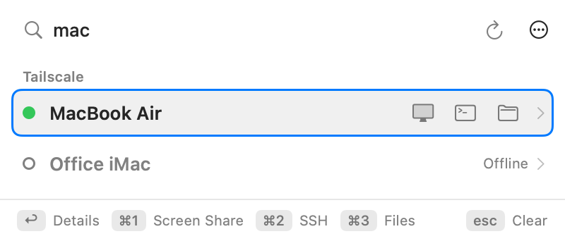

What it does
Click the Hop icon and every Mac you use is listed with its status: a green dot for online, a hollow ring for offline, a dashed ring while Hop is still checking. The list stays quiet: point at a Mac and its Screen Share, SSH and Files buttons appear. Click its name for everything else.
Screen Share
Opens macOS's built-in Screen Sharing to that Mac.
SSH
Opens a terminal session, with your user name if you set one.
Files
Connects to the Mac in Finder over file sharing. The button is dimmed when File Sharing appears to be off there.
Tailscale discovery
Every Mac on your tailnet appears by itself, with live status, and an offline one says when it was last seen. No API key needed.
Nearby
Computers on your local network with Screen Sharing, Remote Login or File Sharing turned on appear by themselves. Add one to My Macs in a click.
Your SSH config
Add hosts from ~/.ssh/config in a click. SSH then uses the entry, with its port, key and jump host. A host behind a jump host shows as offline.
Windows and Linux too
List the PCs and Linux machines on your tailnet. A Windows PC gets Remote Desktop, handed to Windows App.
Wake and Copy Address
Connect to a sleeping computer and Hop wakes it first, then opens the session when it answers. Hop finds each computer's MAC address by itself; nothing to type. Copy the address from the detail view.
Keyboard
Open Hop from any app with a global shortcut, type to filter, and connect with ⌘1, ⌘2 or ⌘3.
Alerts
Optionally get a notification when a saved Mac goes offline or comes back. Off until you turn it on.
Small and private
One Swift file, no dependencies, no account, no telemetry. Your list stays on your Mac.
Your Herdr workspaces, on every Mac
If you run coding agents with Herdr, Hop lists the workspaces on each Mac and gets you into them. None of this appears unless Herdr is installed.
- Open shows a workspace in the Herdr desktop app. In the panel, click the workspace's name.
- New Tab adds a tab with a new terminal, in the workspace's own folder. In the panel, click its +.
- Rename a workspace from a Mac's detail view: click the pencil beside its name. Hop stays in front.
- New Workspace creates one on that Mac in a single click, named after the Mac, with no prompt.
- Open Herdr in Terminal attaches the Herdr terminal app to the Mac. It is in the … menu of a Mac's detail view.
Hop also shows what your agents are doing. The menu-bar icon counts the agents that are blocked and waiting for you, and a banner takes you straight to them. Each workspace shows its own counts, such as "1 working, 1 blocked".
When an agent starts waiting, Hop posts a macOS notification with Open Workspace and Mute for 8 Hours. You can also be told when an agent finishes. Herdr must be open, and a notification can arrive up to 30 seconds late.


Quiet when you want it
Agent status is on by default. From the panel's More menu you can:
- Mute it for 8 hours or 1 week. The mute ends by itself.
- Turn it off. It stays off until you turn it back on.
While muted or off, Hop shows no agent status anywhere, and a crossed-out bell appears at the top of the panel. Click it to turn status back on. Your workspaces and their buttons stay.
Reach a Mac without the mouse
Pick a global shortcut in Manage Macs and Hop opens from any app. Then just type.
- Type to filter the list by name or address.
- ↑ ↓ move the highlight, and ↩ opens that Mac's details.
- ⌘1, ⌘2, ⌘3 start Screen Share, SSH or Files on the highlighted Mac.
- esc clears what you typed, then closes the panel.
The shortcut is off until you choose one.

Install
Hop needs macOS 13 or later and runs on Apple silicon and Intel Macs.
Homebrew
Install and manage updates with Homebrew.
brew tap sercanatalik/hop-remote-launcher https://github.com/sercanatalik/hop-remote-launcher
brew trust sercanatalik/hop-remote-launcher
brew install --cask sercanatalik/hop-remote-launcher/hopThe second line is for Homebrew 7 and later. Use the full name: the short name hop is a different app in Homebrew's own catalog.
Download the app
Ready-built, for both Apple silicon and Intel.
Download Hop.zipUnzip
Hop.zip. Older versions are on the releases page.Move Hop.app to Applications.
Hop isn't notarised by Apple yet, so macOS blocks it the first time. Try to open it once, then go to System Settings → Privacy & Security and click Open Anyway. Or run:
xattr -dr com.apple.quarantine /Applications/Hop.app
Build from source
Takes about a minute. You need the Xcode Command Line Tools.
Install the Command Line Tools, if you haven't:
xcode-select --installGet the code, build Hop and copy it to Applications:
git clone https://github.com/sercanatalik/hop-remote-launcher.git cd hop-remote-launcher ./build.sh --installHop is copied to Applications and starts by itself. Its icon appears in the menu bar.
Set up your remote Macs
On each remote Mac, open System Settings → General → Sharing and turn on what you want to use.
| Feature in Hop | Turn on |
|---|---|
| Screen Share | Screen Sharing |
| SSH, Open Herdr in Terminal | Remote Login |
| Files | File Sharing |
| Remote Desktop (Windows PC) | Remote Desktop, in Windows Settings → System |
First launch. macOS may ask for Local Network access. Allow it, or every Mac stays marked offline and nothing is listed under Nearby.
Away from home. Install Tailscale on every Mac and they show up in Hop wherever you are, with no port forwarding.
Herdr workspaces. A Mac shows its workspaces when the Herdr desktop app has it as a machine (Settings → Machines in Herdr) under the same host name Hop uses.
Wake-on-LAN only works on the same local network. Hop learns a computer's MAC address the first time it is awake on your network and shows it in Manage Macs as "Found automatically"; found addresses stay on your Mac. You can also type one, as aa:bb:cc:dd:ee:ff, AA-BB-CC-DD-EE-FF, aabb.ccdd.eeff or aabbccddeeff. Choosing Screen Share, SSH or Files for an offline computer wakes it first and connects when it answers; after 30 seconds Hop says "Did not wake". Waking needs "Wake for network access" turned on in the remote Mac's Battery or Energy settings.
Awake but not on Tailscale. A saved or Tailscale computer that is on your network but whose own address is not answering is shown as "Online · Local network", and its buttons connect over the local network. This needs Show nearby computers to be on.
Renamed or removed Tailscale devices. When Tailscale gives a device a new name, the saved computer follows it and keeps its settings. When a device has left your tailnet, Hop removes the saved computer after three checks in a row. Computers saved by a local name or an IP address are never changed.
Windows and Linux. On a Windows PC, turn on Remote Desktop and the OpenSSH Server feature. Remote Desktop needs a remote desktop app on your Mac, such as Microsoft's free Windows App. On Linux, run an SSH server.
"Tailscale isn't running" while it is. Versions before 1.1.1 showed this when Hop was opened from Finder or at login. Update to the latest version.
"Tailscale isn't responding". The Tailscale app did not answer within 5 seconds. Open Tailscale, or quit and reopen it; Hop checks again every 30 seconds.
Frequently asked questions
Quick answers to common questions about Hop, remote access, Tailscale discovery, and security.
What is Hop and how does it work?
Hop is a native macOS menu-bar utility written in a single Swift file. It gives you 1-click or keyboard-driven access to Screen Sharing (vnc://), SSH terminal sessions (ssh://), Finder File Sharing (smb://), and Windows Remote Desktop without needing to open separate launcher apps.
How does automatic Tailscale discovery work?
Hop reads status directly from the Tailscale app already installed on your Mac. It automatically discovers every Mac, Windows PC, and Linux box on your tailnet with live online/offline indicators. No Tailscale API keys, tokens, or network configuration are required. Devices other people shared with your tailnet and Mullvad exit nodes are left out. Computers on your local network that have Screen Sharing, Remote Login or File Sharing turned on are found too, under Nearby; turn that off with Show nearby computers, under Discovery in Manage Macs.
Does Hop work remotely over the internet?
Yes. When your remote machines run Tailscale, Hop connects to them anywhere in the world through your encrypted private tailnet without opening ports or configuring port forwarding on your router.
How do I bypass the macOS Gatekeeper warning on first launch?
Because Hop is an independent open-source project without Apple Developer notarization, macOS blocks it the first time. You can go to System Settings → Privacy & Security and click Open Anyway, or run xattr -dr com.apple.quarantine /Applications/Hop.app in your terminal.
How does Hop compare to apps like Screens 5 or Jump Desktop?
Hop is a featherweight launcher, not a heavy remote desktop canvas client. It triggers macOS's fast built-in Screen Sharing app, native Terminal, and Finder file sharing. It consumes virtually zero battery and memory, has no subscription, and is 100% free and open-source.
Does Hop collect telemetry, analytics, or require an account?
No. Hop has zero telemetry, no tracking, no external network communication, and requires no account. Your saved hosts list stays strictly on your Mac in ~/Library/Application Support/Hop/hosts.json.